Volunteer Opportunities
- Healthcare
- Education
- Community
- Environment Conservation
- Wildlife
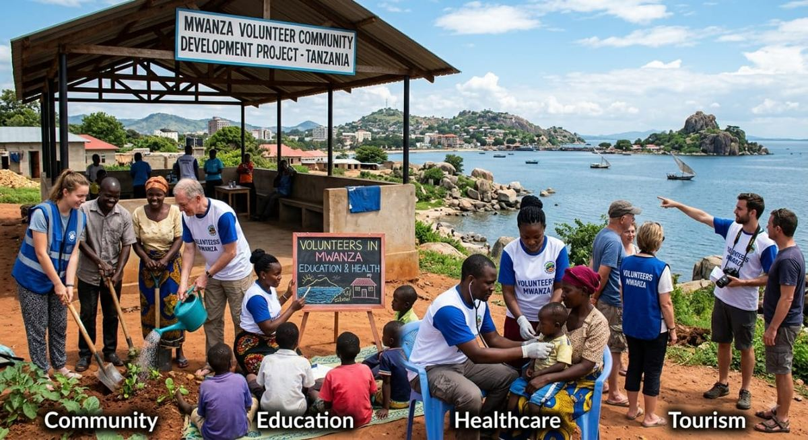
Based in Mwanza, Tanzania
Join meaningful volunteer projects in education, healthcare, childcare, community development, and more with safe accommodation, airport pickup, and professional local support.
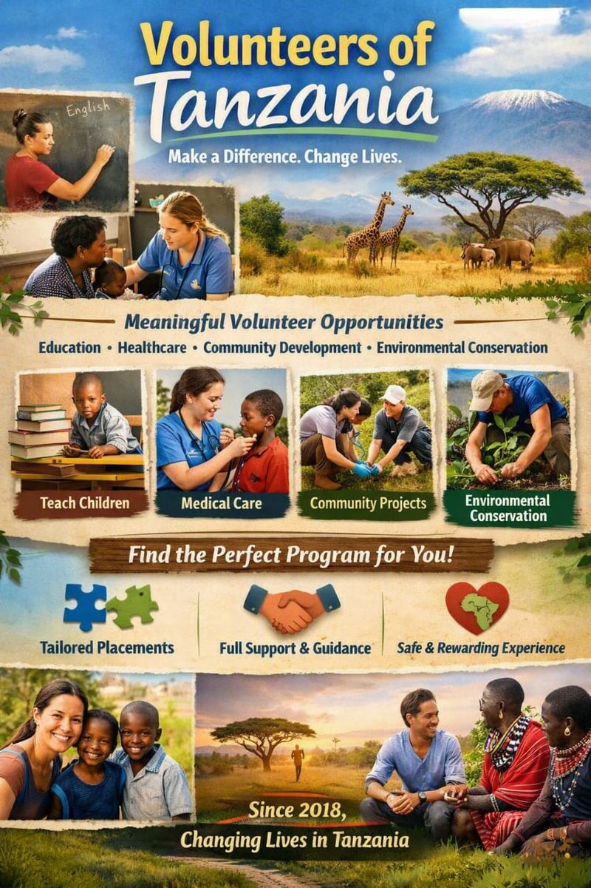
A Little Information About Us
Volunteers of Tanzania (VOT-Mwanza) came to life in 2018, the year we were legally registered as an organization that assists interns, students, and volunteers who want to come to Africa and find suitable placements to help the community.
This initiative is driven by our passion to transform communities and alleviate poverty and life hardships in Africa.
Since 2018, we have been hosting volunteers and interns from different countries and from this initiative, we are witnessing the changes in our communities.
To ensure interns and volunteers are well accommodated during their stay, the company also provides and accommodation and transport services for the entire duration of volunteer experience.
Our volunteer house can accommodate up to 20 people at once
Ask About Volunteering Meet Our TeamOur Impact in Pictures
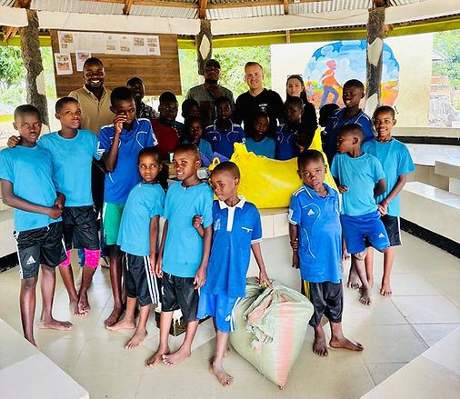
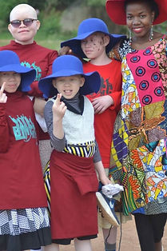
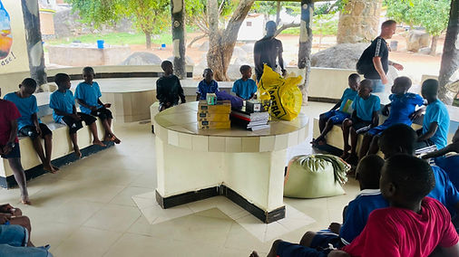
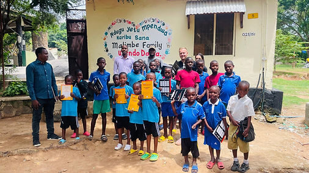
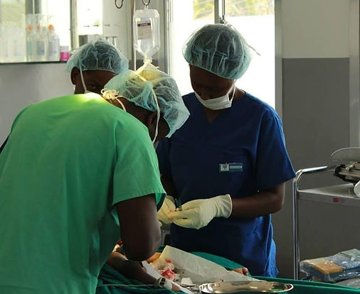
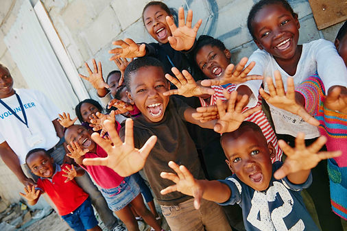
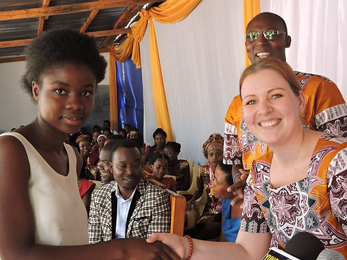

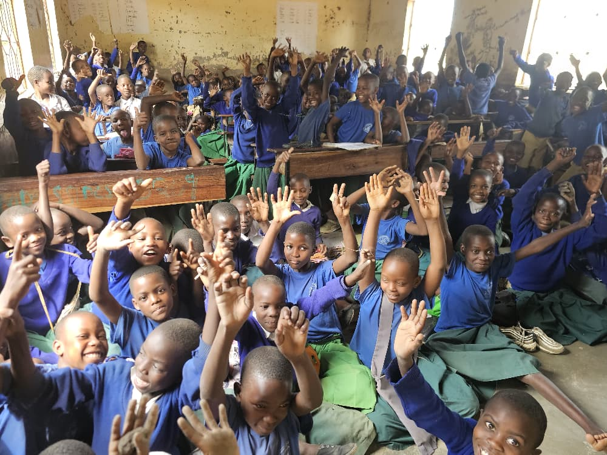

Our Purpose
VOT Mwanza's mission is focused on encouraging all people around the world to volunteer in developing countries. Volunteering will help the world community to better understand the needs and challenges faced by developing countries. In the long run, communities around the world will become more aware and give necessary assistance related to problems in developing countries.
Our vision is to see the life of underdeveloped communities improved through the organization of internships and volunteering programs. Through internships, students' practical training, and voluntary works, we believe a multinational community is created.
Discover Your Host City
Mwanza City, also known as Rock City to the residents, is a port city and capital of Mwanza Region on the southern shore of Lake Victoria in north-western Tanzania. With an urban population of over 3.6 million, it is Tanzania's second-largest city. The Sukuma constitute over 90% of the region's population, alongside smaller communities including the Zinza, Haya, Sumbwa, Nyamwezi, Luo, Kurya, Jita, Shashi, and Kerewe.
Swahili is Tanzania’s official language, and English is used alongside it. Most people speak their tribal language and Swahili, with many speaking English as a third language. Learning a few basic Swahili words will go a long way Tanzanians will love to interact with you!
Greetings are an important part of Tanzanian culture. Handshakes may last longer than you expect this is normal. Tanzanians treat the elderly with the greatest respect. To greet an elder, say "Shikamoo", and they will respond "Marahaba".
Christianity is the most practiced religion (~63%), followed by Islam (~34%). Around 1.2% follow traditional religions, and 1.8% are non-believers. Tanzania is known for its peaceful coexistence among faiths.
Tanzanians generally dress conservatively. Women traditionally wear long skirts with knees and shoulders covered. In places like Zanzibar, there is a strict dress code. At the coast, you'll discover the colourful kikoi (sarong for men) and kanga (sarong for women).
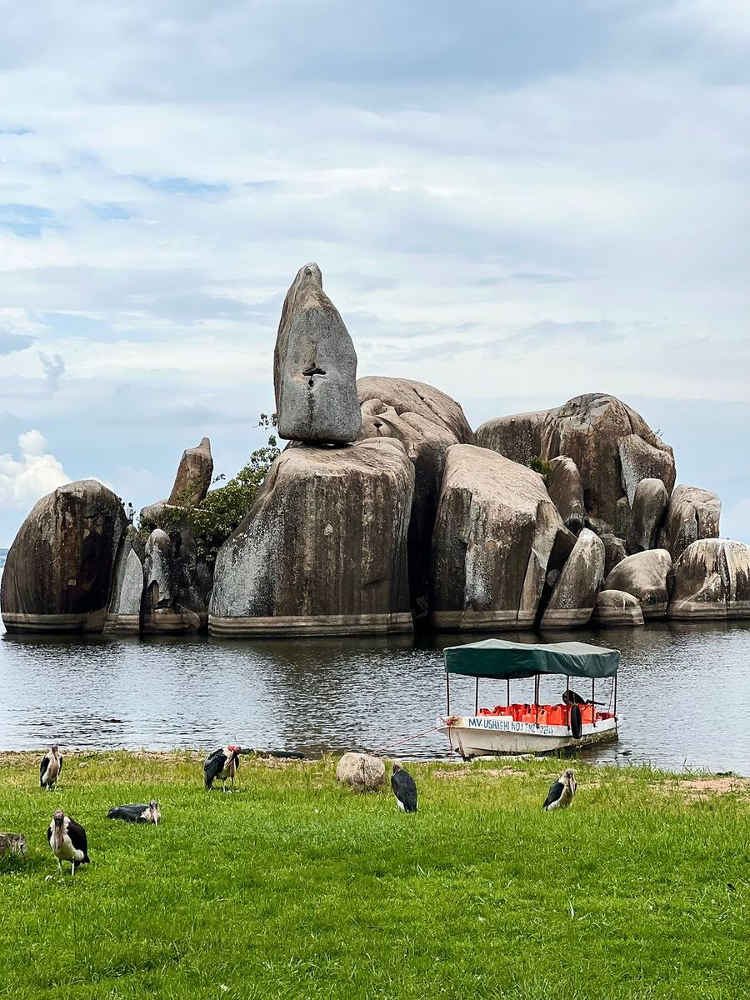

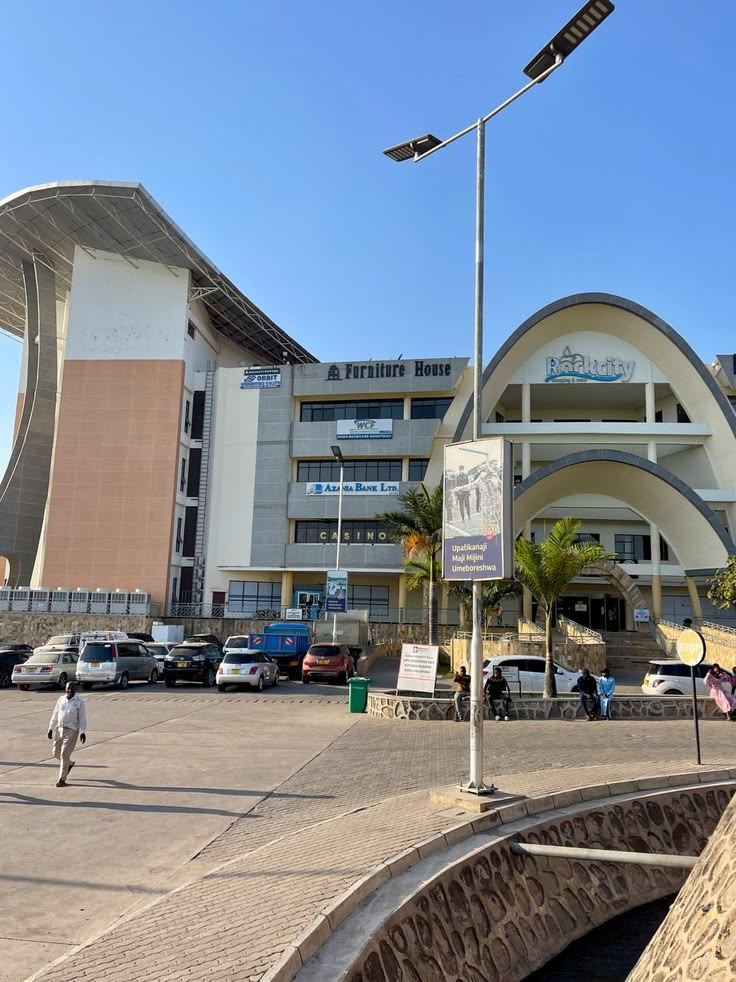

Why Volunteers Choose VOT
Years of placements built on word-of-mouth trust from returning volunteers.
Shared and single rooms at VOT hostels, always with fellow volunteers nearby.
Guidance before, during, and after your placement never far from help.
Choose a duration and placement that fits your goals and schedule.
Opportunities
Work directly with local families, youth groups, and grassroots initiatives across Mwanza.
View this programSupport literacy and classroom learning as a teaching assistant in local schools.
View this programGain hands on experience at clinics and hospitals, with full local supervision.
View this programTrain in customer service and hospitality while supporting local small businesses.
View this programYour Tanzania Experience Starts Here
Stay, learn, and volunteer in one of Tanzania’s most fascinating cities. From the granite boulders that give Mwanza its nickname to the shores of Lake Victoria and the gateway to the Serengeti, this is an authentic introduction to Tanzania.
Accommodation
During your stay in Tanzania, you'll be accommodated at VOT Hostel in Nyegezi, just 8 km from Mwanza City Center and 3 km from St. Augustine University of Tanzania (SAUT).
Our hostel is located on the roadside, making it easy to access public transport if needed. Our main house can host up to 20 guests at once. Don't worry; if you have a team of more than 20 people, we will always have a solution for that. You won't have to worry about companionship, as there are always volunteers living in the house.
Our local staff will prepare breakfast, lunch, and dinner daily, taking special dietary needs into account. Meals include a mix of traditional African dishes and some Western cuisine. Complimentary tea, milk, coffee, and drinking water are provided while at VOT House.
If you enjoy cooking, you are always welcome in the kitchen. Soft drinks and beer are available for purchase in nearby stores.
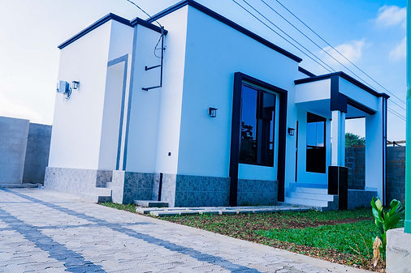
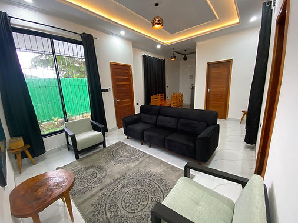
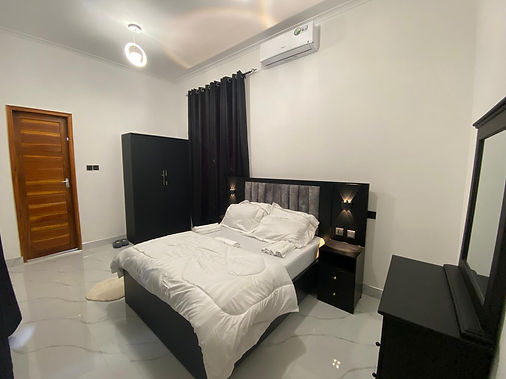
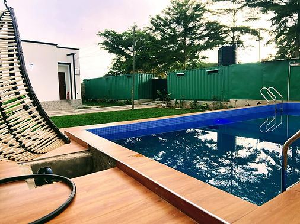
Discover our modern, fully-equipped accommodation designed for your comfort and convenience during your volunteer journey.
View Accommodation DetailsBedrooms are designed to provide comfort throughout your stay. For those seeking a tranquil escape, we also offer vibrant shared bedrooms that foster a sense of community among travelers. The choice is entirely yours, allowing you to select the option that best suits your desires and needs.
No matter which you choose a private or shared bedroom our dedicated team is committed to ensuring that your experience with us is enjoyable and memorable.
We have both shared bedrooms with shared washrooms and self contained bedrooms fitted with furniture to allow you to engage in personal study and other table activities. Don't worry about towels and bed sheets; we've got you covered!
The main house features a spacious sitting room, Western-style toilets, showers with hot water, and a kitchen. Each bedroom is equipped with bed sheets, towels, mosquito nets, and either air conditioning or a fan. Depending on your privacy needs, the bedrooms in the main house can be used privately, but this can be for an additional cost.
Free Wi-Fi is also provided. However, it is important to note that there are often power outages, which may affect the availability of hot water.
Enjoy the fenced yard, green garden, swimming pool and flowers surrounding the house for relaxation with friends. The place is very safe and for your safety at night, we have a night guard who is always on duty.
Our other house has a self contained room and other shared rooms with shared washrooms. Each shared room has two bunk beds to accommodate up to 4 people. They also have tables for extra activities in the room.
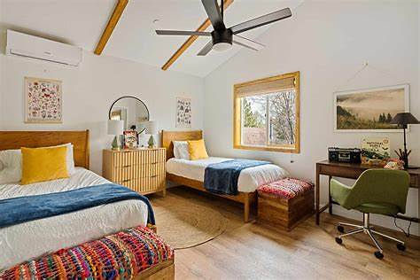
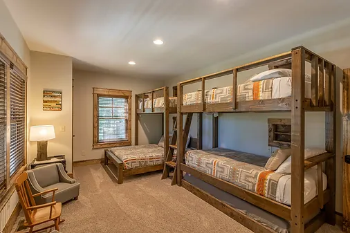
Tours
We organize safaris to destinations across Tanzania, including the Serengeti, Ngorongoro, and the famous Zanzibar Island more than 15 national parks and reserves to choose from.
In Their Words
“My three months teaching in Mwanza were the most rewarding of my life. VOT made sure I always felt supported.”
— Volunteer Name, Country, Education Program
“The healthcare placement gave me hands-on clinical experience I couldn’t get anywhere else. The staff felt like family.”
— Volunteer Name, Country, Healthcare Program
“From airport pickup to my last day, everything was organized. I’d recommend VOT to anyone considering Tanzania.”
— Volunteer Name, Country, Community Program
Your Journey to Make an Impact in Tanzania
Simple steps. Real impact. Lifelong memories.

Browse our diverse volunteer opportunities and select the placement that best matches your interests, skills, and availability.

Complete our simple application form. Once we receive it, we shall review your application and contact you to discuss your placement, dates, and answer any questions.

After your placement is confirmed, we'll guide you through everything you need, including visa information, travel planning, airport pickup, accommodation, and what to pack.

Arrive in Tanzania, receive a warm welcome, attend orientation, and begin your volunteer experience while immersing yourself in the local culture and creating lasting memories.
Your safety is our priority
Experienced, caring & passionate
Community focused & sustainable
Join a global community
Contact
Tell us your interests and availability our team will help match you with the right placement.